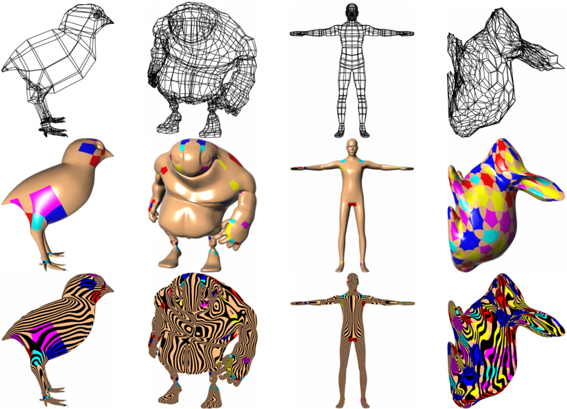

Construction and application of surfaces and bodies on irregular parameter domains
In this project, I researched three relevant papers, analyzed, compared, and summarized cutting-edge methods for constructing surfaces and bodies on irregular parameter domains.
Read More